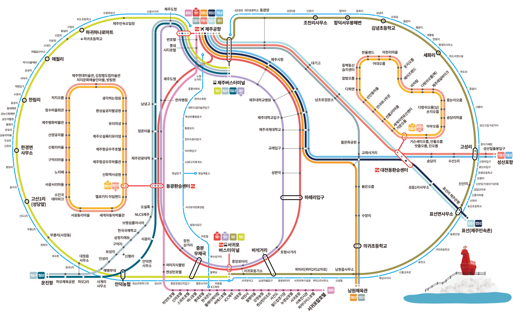

교통정보안내
제주도를 오가기 위해서는 지형적 특징으로 하늘길과 바닷길, 항공과 여객선을 이용해야 한다.
제주 내에서 이동수단은 렌터카, 버스, 전세버스, 택시 등 다양해 여정과 예산에 따라 알맞게 이용할 수 있다.
-
버스이용 안내
2017년 8월 26일부터 시행 된 제주형 대중교통 체계 개편으로 버스를 이용한 제주여행이 더 빠르고, 더 편하고, 더 저렴해 졌다.
1,200원으로 제주 전지역 어디든지!
제주 전지역 시내버스화를 통해 1,200원이면 제주 전지역으로 이동가능. 교통카드를 이용하면 1,150원으로 이용가능 (급행버스는 2,000원에서 최대 3,000원)급행버스 8개 노선, 제주공항 기•종점 운행
제주국제공항과 도내 모든 환승정류장을 연결하는 급행노선이 신설되어 공항에서 출발해서 도내 전지역을 1시간 내외로 이동 가능동•서부 주요 관광지를 연결하는 관광지 순환버스 운행
대천교차로(동부지역)와 동광교차로(서부)를 기종점으로 인근 주요관광지를 연결하는 관광지 순환버스가 운행대중교통 우선차로제로 제주시내 관광도 빠르게!
대중교통 차량만 이용 가능한 중앙차로제와 가변차로제로 막히는 제주시내 관광도 교통체증 없이 빠르고 쾌적하게 이용 가능버스 증차, 디자인 변경, 무료 Wi-Fi 제공
개선 이전 530대의 버스가 797대로 267대 증가. 급행, 간선, 지선, 관광지 순환버스를 한눈에 알아볼 수 있도록 디자인(색상)이 변경되었으며, 모든 버스에서 무료 Wi-Fi가 제공되어 스마트한 여행 가능- 